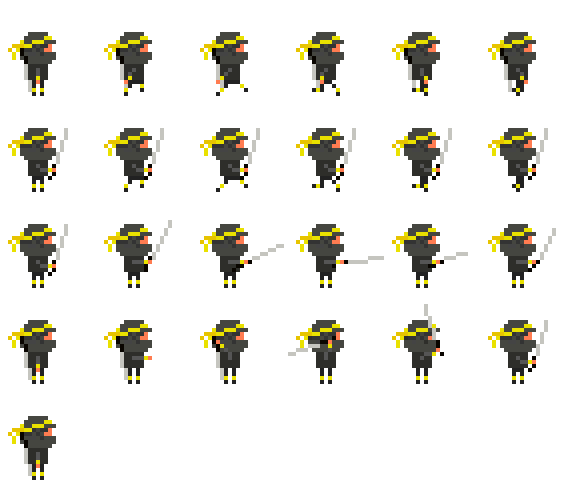

Games
This page is all about the games that I've made. Most of them are unfinished; it's really just about me playing around with things.
This page is all about the games that I've made. Most of them are unfinished; it's really just about me playing around with things.

Just a silly little foray into Isometric pixelling.
This is My Entry to Ludum Dare 30. Still very much in progress!
This was My Entry to Ludum Dare 26. It's really not very good at all, but it is notable because the whole thing was developed entirely using my iPad.
Rouge is a little survival sort-of-roguelike thing. Built to test my implementation of A* pathfinding in Javascript.
I think Sea of Blood was going to be a fast-paced combat thing where the blood of your defeated foes slowly filled up the screen forcing you to climb ever higher as you battled for your life.
Mostly though, it was a way to show the animation frames on the sprite I was playing around with. It never got finished.
